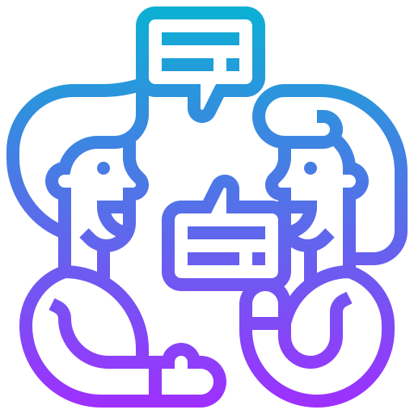
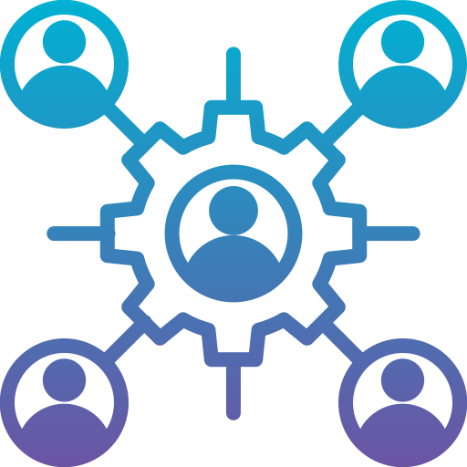
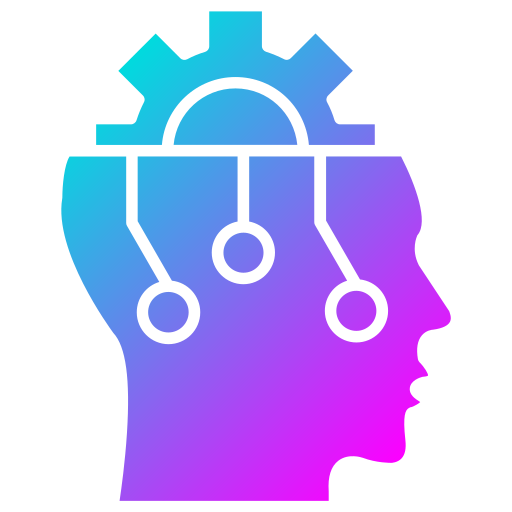
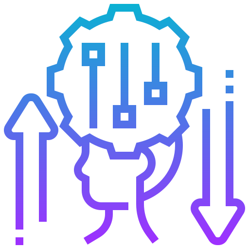
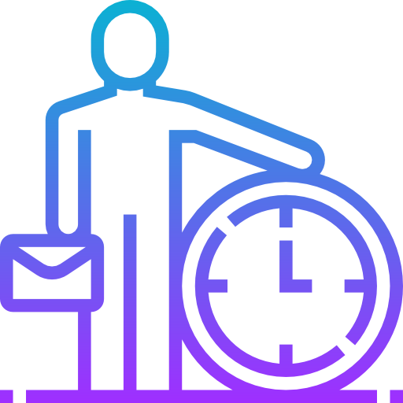

O que é Soft Skill
As soft skills são como as qualidades e comportamentos que tornam as pessoas boas em se dar bem com os outros e serem bem-sucedidas na vida. É tudo sobre como você se relaciona com as pessoas, como se comunica, resolve problemas e lida com situações difíceis.
Imagine que você tem um amigo chamado João. Ele é ótimo em ouvir quando você tem um problema, e isso faz com que você se sinta compreendido e apoiado. Isso é uma soft skill chamada empatia.
Agora, pense em sua amiga Maria. Ela é muito boa em trabalhar bem com outras pessoas em projetos da escola. Ela sabe como dividir tarefas, ouvir as ideias dos colegas e contribuir para o grupo de maneira positiva. Isso é outra soft skill chamada habilidade de trabalho em equipe.
E quando você pensa em sua tia Ana, que sempre encontra soluções criativas para os desafios da vida, isso é uma soft skill chamada criatividade.
Essas habilidades são como ferramentas que ajudam as pessoas a se destacar em diferentes situações, seja na escola, no trabalho ou em suas relações pessoais. Elas não são coisas que você aprende em livros, mas sim qualidades que desenvolvemos ao longo da vida para nos tornarmos pessoas melhores e mais eficazes em tudo o que fazemos.
-

Comunicação
Ser capaz de expressar ideias de forma clara e concisa.
-

Colaboração
Trabalhar bem em equipe e contribuir de forma positiva para alcançar objetivos
-

Pensamento crítico
Habilidade de analisar informações de forma objetiva e tomar decisões fundamentadas.
-

Adaptabilidade
Ser flexível e capaz de se ajustar a diferentes situações e mudanças.
-

Gerenciamento de tempo
Habilidade de priorizar tarefas e cumprir prazos.
-

Resolução de problemas
Capacidade de identificar e resolver problemas de forma eficiente.
Qual das Soft Skills é a Melhor?
Não existe uma soft skill mais importante do que as outras. Todas elas são igualmente importantes e desempenham um papel único em diferentes situações. Dependendo do que você estiver fazendo, algumas soft skills podem se destacar mais do que outras. É fundamental desenvolver um conjunto diversificado de habilidades sociais para se adaptar e ter sucesso em diversas circunstâncias.
Soft Skill De Liderança
Se eu fosse obrigado a decidir qual das Soft Skills eu consideraria a mais importante, com certeza diria que, na minha opinião, seria a Liderança. Liderança é simplesmente a habilidade de liderar e inspirar pessoas. Acredito que, para ser um bom líder, você deve possuir muitas outras habilidades, principalmente aquelas que envolvem o relacionamento e a interação com as pessoas.